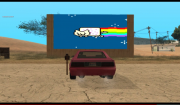
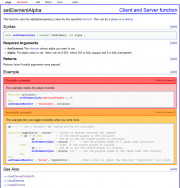
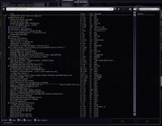
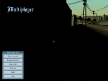

File list
From Multi Theft Auto: Wiki
This special page shows all uploaded files.
| Date | Name | Thumbnail | Size | Description | Versions |
|---|---|---|---|---|---|
| 19:16, 16 February 2014 | Preferences-desktop-locale.png (file) |  |
1 KB | 1 | |
| 08:49, 6 August 2012 | Emblem-favorite.png (file) |  |
2 KB | Tango emblem favorite | 1 |
| 10:02, 22 January 2012 | Mta-screen 2010-09-25 21-59-07.png (file) | 858 KB | MTA:SA Custom map (wipeout) | 1 | |
| 09:57, 22 January 2012 | Mtasa-nyan.png (file) |  | 560 KB | MTA SA Nyan cat | 1 |
| 16:20, 16 January 2012 | Office-calendar.png (file) |  |
1 KB | Tango Office Calendar Icon | 1 |
| 20:35, 10 January 2012 | Mtavcbluelaunching.png (file) | 13 KB | Multi Theft Auto Launch splash screen also used in MTA: San Andreas Race. | 1 | |
| 21:01, 17 December 2011 | MTA Main Menu 1.1.x.png (file) | 682 KB | MTA Main Menu 1.1.x | 1 | |
| 13:25, 17 November 2011 | Edit-delete.png (file) |  |
2 KB | Tango Edit Delete Icon | 1 |
| 10:30, 16 November 2011 | Dialog-warning.png (file) |  |
1 KB | Tango Dialog Warning Icon | 1 |
| 10:50, 14 November 2011 | Layout function page.png (file) |  | 114 KB | Layout Function Page MTA Wiki | 1 |
| 10:50, 13 November 2011 | Applications-office.png (file) |  |
2 KB | Tango Applications Office Icon | 1 |
| 10:14, 13 November 2011 | Osi symbol.png (file) | 8 KB | Open Source Initiative Logo | 1 | |
| 23:40, 12 November 2011 | System-file-manager.png (file) |  |
667 bytes | Tango System File Manager Icon | 1 |
| 23:33, 12 November 2011 | Internet-group-chat.png (file) |  |
783 bytes | Tango Internet Group Chat Icon | 1 |
| 21:31, 12 November 2011 | Package-x-generic.png (file) |  |
1 KB | Tango Package x Generic icon | 1 |
| 21:11, 12 November 2011 | Preferences-system.png (file) |  |
2 KB | Tango Preferences System Icon | 1 |
| 20:49, 12 November 2011 | Applications-development.png (file) |  |
2 KB | Tango Applications Development Icon | 1 |
| 20:25, 12 November 2011 | Input-gaming.png (file) |  |
1 KB | Tango Input Gaming icon | 1 |
| 20:21, 12 November 2011 | Start-here.png (file) |  |
1 KB | Tango Start Here Icon | 1 |
| 18:45, 12 November 2011 | Go-down.png (file) |  |
1 KB | Tango Go Down Icon | 1 |
| 21:17, 11 November 2011 | Accessories-text-editor.png (file) |  |
1 KB | Tango Accessories text editor icon | 1 |
| 20:21, 10 November 2011 | Dialog-information.png (file) |  |
2 KB | Tango Dialog-information icon | 1 |
| 18:50, 10 November 2011 | Process-stop.png (file) |  |
2 KB | Tango process stop icon | 1 |
| 18:45, 10 November 2011 | Emblem-important.png (file) |  |
2 KB | Tango emblem important icon | 1 |
| 18:37, 1 September 2011 | MTA Main Menu 1.0.x.png (file) | 586 KB | MTA Main Menu 1.0.x | 1 | |
| 18:46, 28 August 2011 | Menu Settings.JPG (file) | 35 KB | 2 | ||
| 18:43, 28 August 2011 | Server Browser.jpg (file) |  | 132 KB | 2 | |
| 15:36, 28 August 2011 | MTASA-Race-Racing.jpg (file) | 105 KB | Multi Theft Auto: San Andreas Racing | 1 | |
| 15:02, 28 August 2011 | MTASA-Race-Mainmenu.png (file) |  | 156 KB | MTA:SA Race Main Menu | 1 |
{kind=link}
{kind=link}
{kind=link}
{kind=link}
{kind=link}
{kind=link}
{kind=link}
{kind=link}
{kind=link}
{kind=link}
{kind=link}